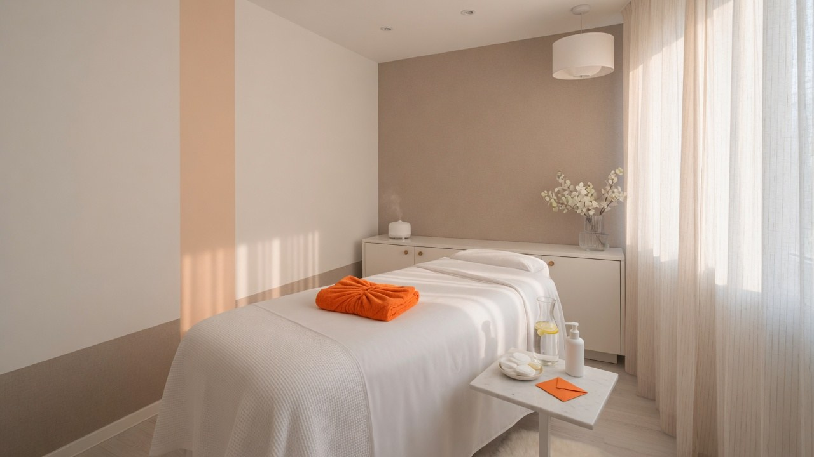
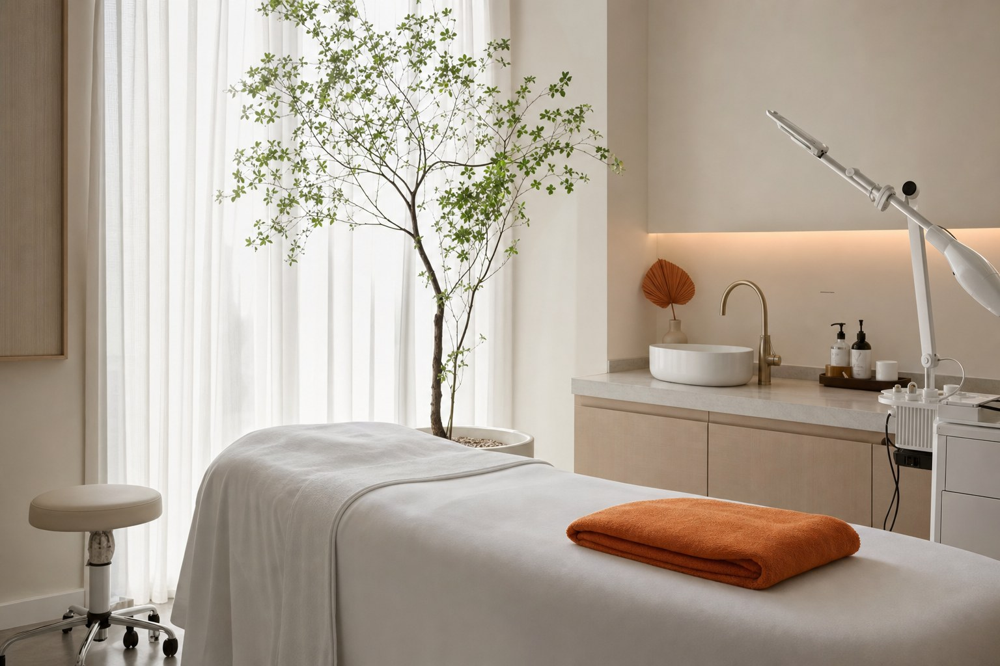
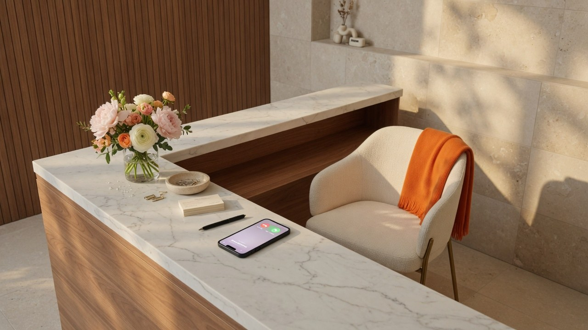
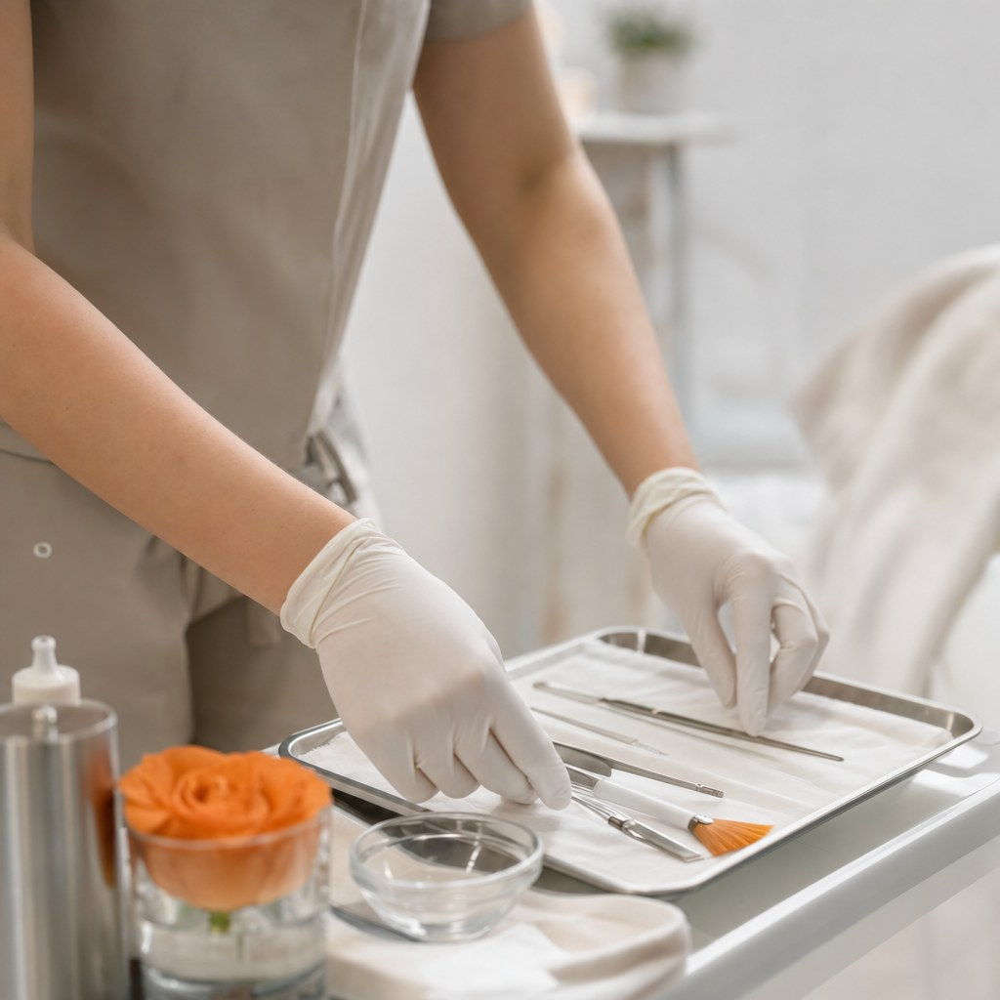
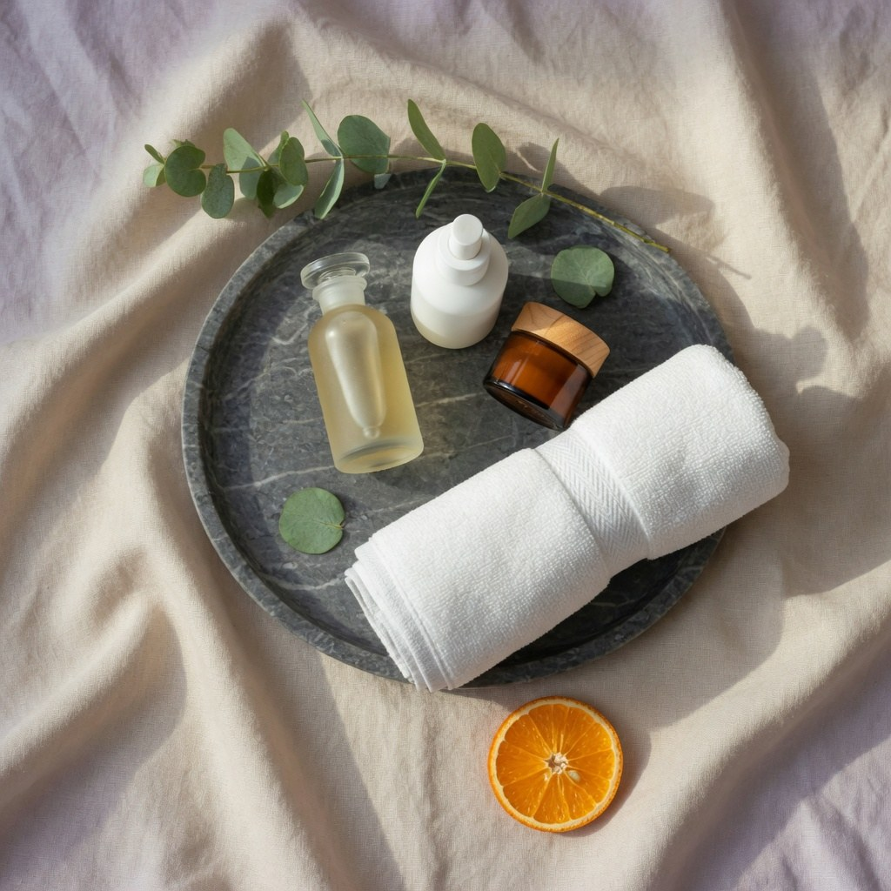

08 — Section Texture (KEPT from R1)
BACKGROUND / DARK SECTIONSYour pick from round 1. Orange energy on black, copy space left.
Grok Imagine
Grounded in the actual business this time. Natural light, real rooms, orange as an accent. Round 1 rejects deleted; your texture pick kept as 08. Reply with numbers.




